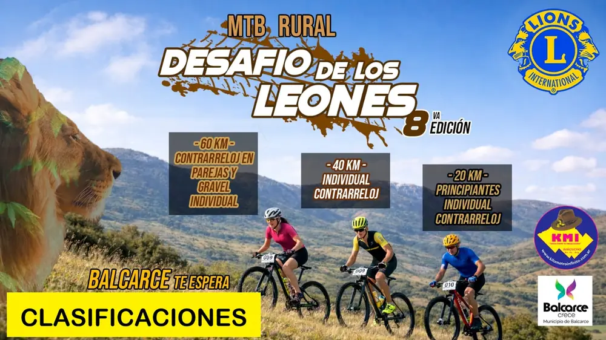
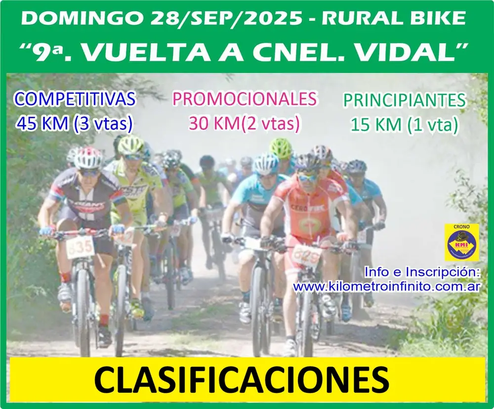
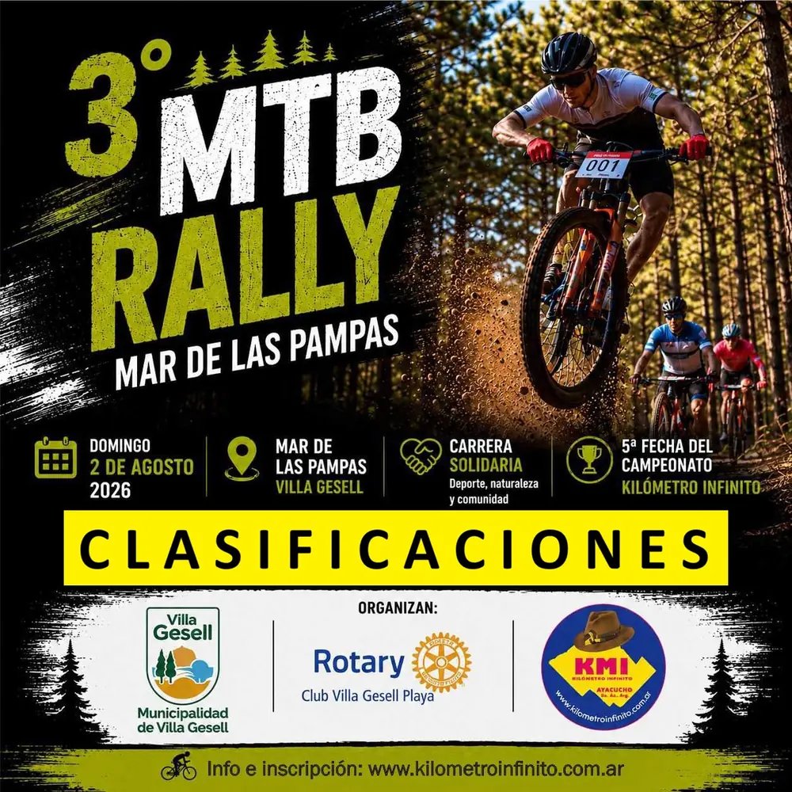
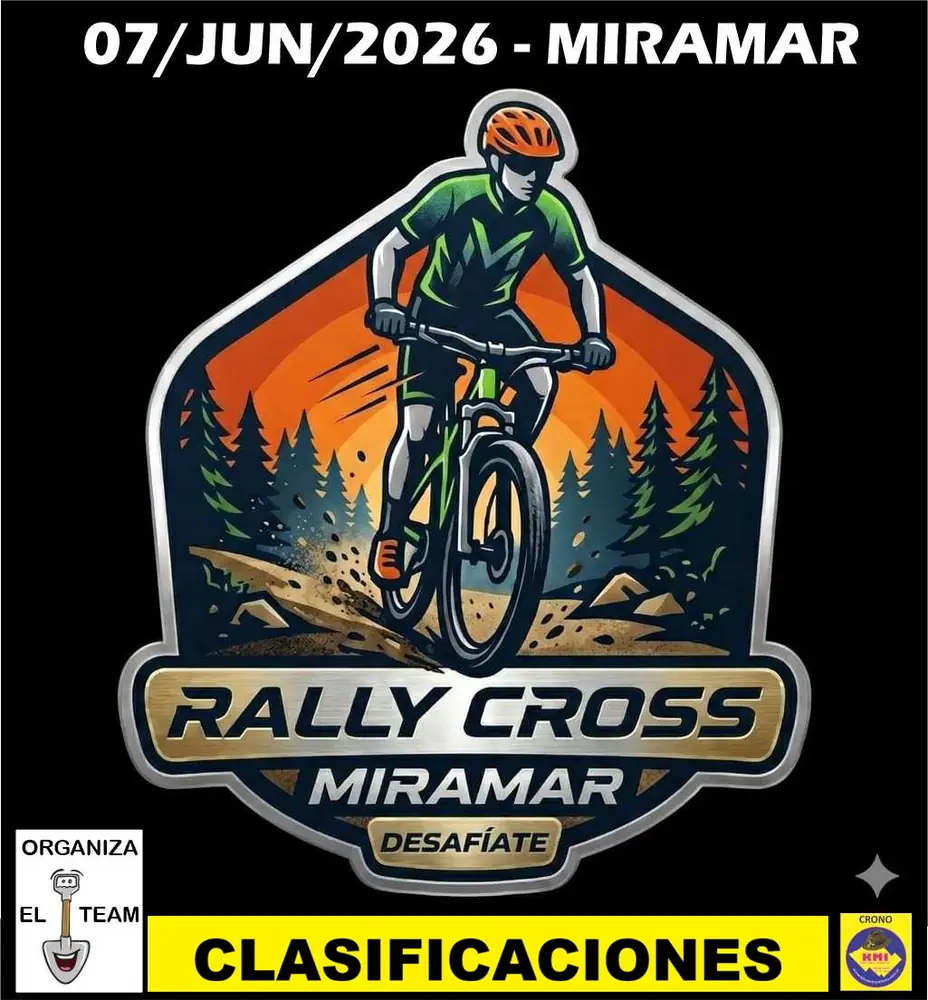
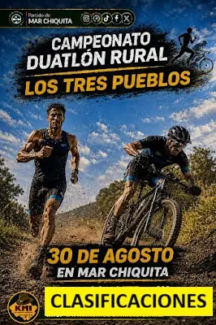
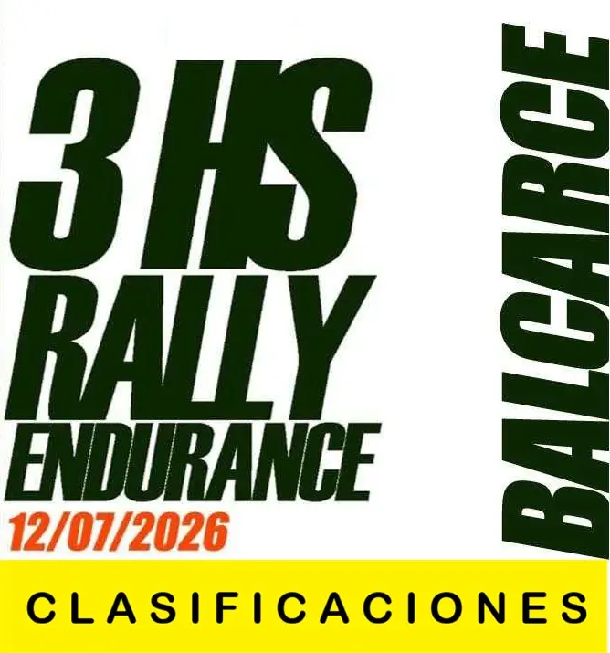
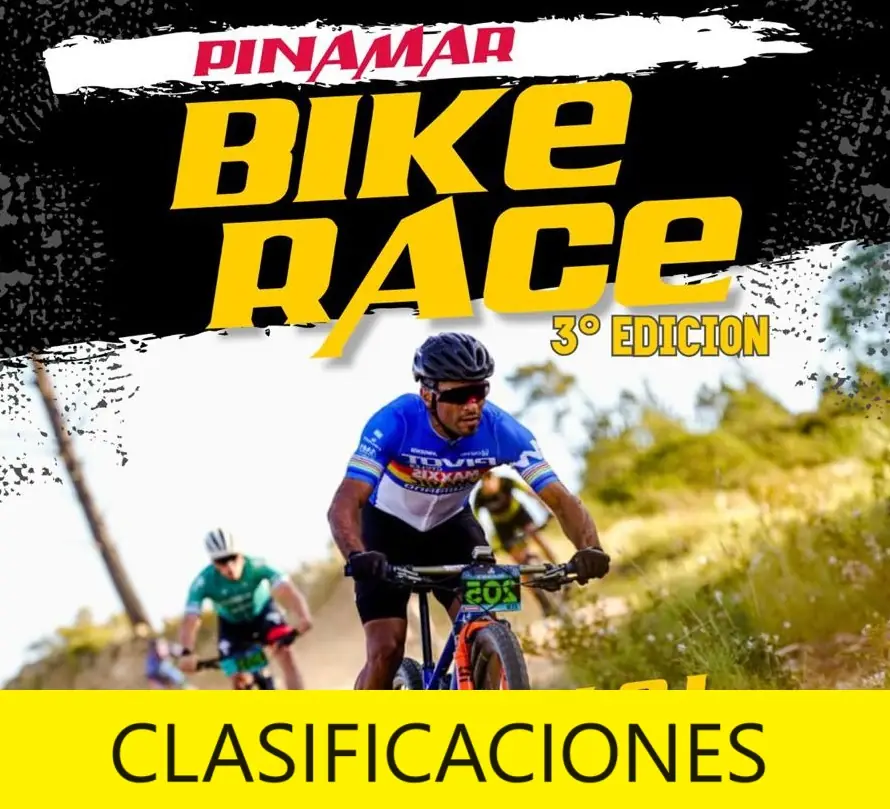

Competencias
Las que vuelven todos los años. Entrás a cualquiera y ves sus ediciones, quién ganó y los afiches.

Desafío de las Tres Cruces
Ayacucho · 14 ediciones con clasificación

Desafío de los Leones
Balcarce · 12 ediciones con clasificación

Rally Costa del Este
Costa del Este · 10 ediciones con clasificación

Vuelta a Coronel Vidal
Coronel Vidal · 9 ediciones con clasificación

Rally Bike Solidario del Rotary
Villa Gesell · 9 ediciones con clasificación

Vuelta a Gardey
Gardey · 8 ediciones con clasificación

Vuelta de MTB Rural a Batán
Batán · 7 ediciones con clasificación

Vuelta al Pueblo de Pila
Pila · 6 ediciones con clasificación

Vuelta a la Escuela Granja
Tandil · 5 ediciones con clasificación

Rally Cross Miramar
Miramar · 5 ediciones con clasificación

Duatlón Rural Laguna Mar Chiquita
Mar Chiquita · 5 ediciones con clasificación

Rural Bike Mechongué
Mechongué · 5 ediciones con clasificación

Las 3 Horas de MTB en Balcarce
Balcarce · 5 ediciones con clasificación

Rural Bike Sebastián Podazza
General Lavalle · 5 ediciones con clasificación

Rally Mar y Sierras
Mar del Plata · 4 ediciones con clasificación

MTB Series Sierra de los Difuntos
Mar del Plata · 4 ediciones con clasificación

Desafío de las 7 Lomas
Sierra de los Padres · 4 ediciones con clasificación

Pinamar Bike Race
Pinamar · 3 ediciones con clasificación